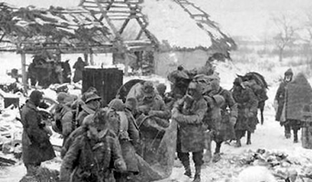
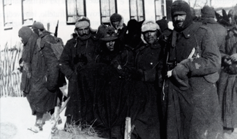

progetti // corsa a piedi nudi nella neve
Aprica (SO)
3 Marzo 2013
S. Stefano D'Aveto (GE)
6 Gennaio 2012
Oltre Il Colle (BG)
30 Dicembre 2010
Roncobello (BG)
2 Gennaio 2010
spirito della manifestazione
RICORDARE PER CAPIRE: NIKOLAJEWKA INSEGNI
L'esperienza della semina della patata, è collegata alla corsa a piedi nudi sulla neve in onore del reduce dalla Campagna di Russia Basilio Gervasoni e simbolicamente a tutti i soldati che hanno vissuto l'esperienza della querra in Russia.
Il significato è quello di cercare di ricordare e far rivivere per non ripetere.
Ricordare ha senso se si cerca di capire ciò che ha portato alla guerra e ancora oggi porta a tante guerre. Per non ripetere. Oggi come allora i meccanismi sono i medesimi, ma non se ne parla a sufficienza; si ricorda qualche evento, si fanno giornate della memoria, ma tutto rimane come prima: "È come l’acqua leggera che lascia le cose come le trova" ricorda Luciana, orfana di padre disperso in Russia e nonno morto nella 1° guerra mondiale.

Con questi eventi cerco di compiere un passo ulteriore.
Assumersi la responsabilità per le proprie azioni, dandone un senso, fare delle scelte, concretizzare delle idee. Piantare patate è anche simbolicamente offrire nuovo nutrimento. Contribuire alla vita.
Fare un gesto, la coltivazione della patata, così come alcune donne russe, con i loro gesti fatti di offerta di cibo e conforto umano, hanno aiutato a salvare tanti nostri soldati allo sbando e senza nutrimento durante la ritirata dalla Campagna di Russia.
L'essenza della vita umana è quella di donare , di contribuire alla gioia dell'altro e nello stesso tempo gioire di ciò. Allora perché si sente sempre dire che la violenza è nella natura dell'uomo?
"Lo scopriremo vivendo", le esperienze proposte.
Grazie per l'attenzione e speriamo di incontrarci personalmente per condividere questa essenza.
Basilio Gervasoni
Nato a Roncobello (BG) nel 1917.
A 22 anni parte per militare destinazione Merano nel 2° reggimento artiglieria alpina, 32° batteria, gruppo Bergamo.
Nel 1940 ha combattuto contro i Francesi per una settimana sul Monte Bianco.
Il 7 Novembre del 1941 parte per l'Albania dove rimarrà per otto lunghi mesi.
A 25 anni, nel luglio del 1942 si reca a Torino destinazione Russia. 14 giorni di treno poi 1200 Km a piedi con 45 /50 Kg di zaino sulle spalle e con il pensiero della famiglia nel cuore. Marce di 55/60 Km al giorno per coprire la distanza in 20 giorni per arrivare in zona di guerra.
Il 16 gennaio 1943 lascia il fronte sul Don e inizia la ritirata. Combatte la prima battaglia a Podgornoe "... poi è stato un continuo combattimento, abbiamo rotto 11 accerchiamenti. Si camminava sempre, si combatteva, il freddo era di 40/45 gradi sotto zero...". Combatte il 26 gennaio a Nikolajewka ”... i piedi si congelavano, ma bisognava camminare sempre, chi si fermava era perduto, per sempre. Ho camminato due giorni interi con un piede congelato ...”
Il 7 Febbraio 1943, dopo 22 giorni di combattimenti e marce, riceve il primo pasto. E' salvo, ma gli amputeranno tutte le dita di un piede.
Nel Novembre del 1943 conclude la sua vita militare.